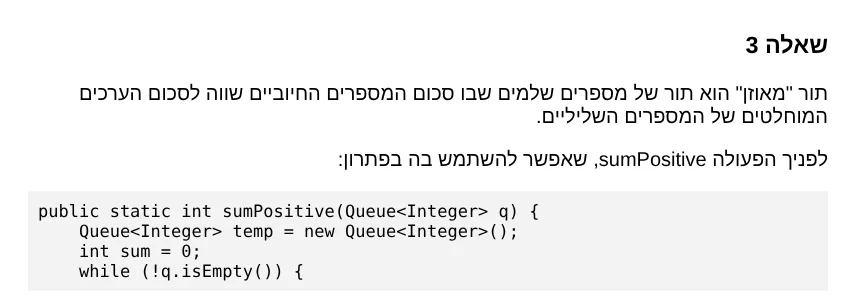
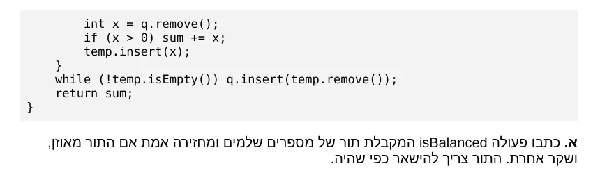
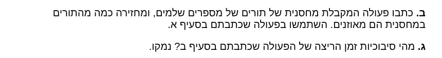
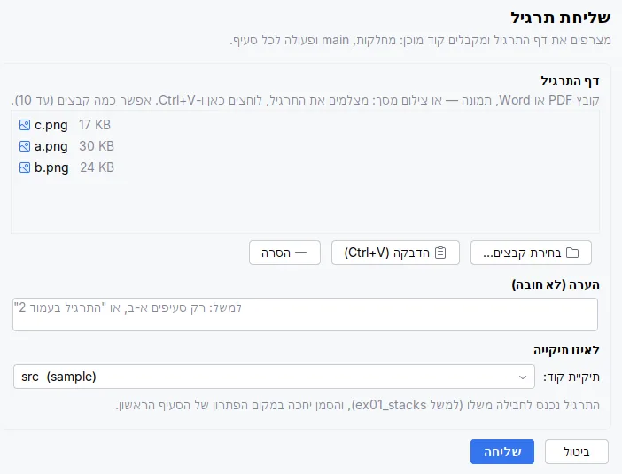
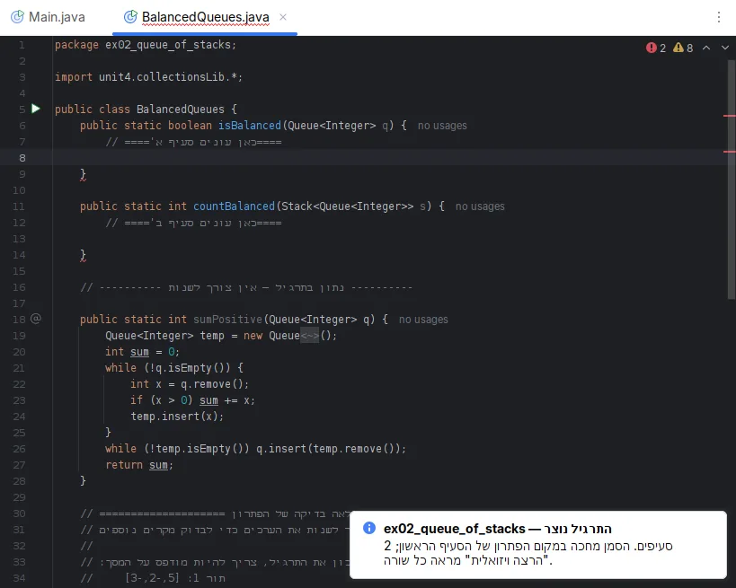

רואים מה הקוד עושה,
שורה אחרי שורה
תוסף ל-Eclipse, ל-VS Code, ל-Visual Studio ול-IntelliJ שמריץ תרגיל במבני נתונים ומצייר בזמן הריצה כל מחסנית, תור, רשימה ועץ. בשביל תלמידי מדעי המחשב שלומדים לבגרות ב-Java או ב-C#.
ב-Mac מדביקים את השורה הזו ב-Terminal:
curl -fsSL https://raw.githubusercontent.com/motiml77/java-lamerhav/master/java-visualizer/installer/mac/install.sh | bashיש לכם Mac? שורת ההתקנה ל-Terminal. יש לכם Windows? הורדת DSViz-Setup.exe. ההתקנה לכל סביבה
- Windows 10/11
- macOS 12 ומעלה
- Java 21 בפנים
- חינם
שורה 1: הפעולה קיבלה מחסנית: 4 בראש, 9 בתחתית
הפעולה countEven מתרגיל אמיתי: סופרת את הזוגיים במחסנית בעזרת מחסנית עזר, ומחזירה את המחסנית למצבה.
← הבא→ הקודםרווח הפעלה ועצירהHome End התחלה וסוף
מדף הבחינה לפרויקט שרץ
שולחים את דף התרגיל מתוך סביבת העבודה, ואחרי בערך חצי דקה נפתח תרגיל מוכן לכתיבה: פעולה ריקה לכל סעיף, מה שנתון בשאלה, ו-main עם נתונים לדוגמה ומה צריך להיות מודפס כשהפתרון נכון. את הפתרון כותבים לבד. אם נתקעים, יש הצעה לפתרון שנפתחת רק כשמבקשים.




כאן הדבקנו שלושה צילומי מסך של אותו דף, ולא משנה באיזה סדר. אפשר להוסיף הערה, למשל "רק סעיפים א-ב", ולבחור לאיזה פרויקט. אותו חלון יש ב-Eclipse, ב-VS Code וב-Visual Studio.
בדף שאלת בגרות לקוד מעלים את הדף ומורידים את הקבצים כ-ZIP. בשני המקרים צריך אינטרנט: הדף עובר דרך השרת של DSViz ל-Gemini של Google ולא נשמר, וזה לוקח בדרך כלל עד דקה. ההרצה הוויזואלית וההסברים בעברית עובדים גם בלי אינטרנט.
ככה זה נראה בסביבה

ב-VS Code: "שליחת תרגיל" בשורת המצב, כשפתוח קובץ Java או C#, וההצעה לפתרון מעל כל פעולה. ב-Visual Studio: הקיצורים "שליחת תרגיל ב-C#" ו"הצעה לפתרון ב-C#" בשולחן העבודה ובתפריט התחל, והתרגיל נכנס כפרויקט מוכן בפתרון.
כל צעד על המסך
כותבים פעולה רגילה ולוחצים על הרצה ויזואלית. נפתח חלון עם השורה שרצה עכשיו, כל המשתנים וערכיהם, והמבנים עצמם: מחסנית כקופסה שנפתחת למעלה, תור כצינור עם כניסה ויציאה, רשימה כחוליות עם חצים. מה שנכנס למבנה נגרר פנימה, ומה שיוצא נזרק החוצה.
remove יוצא מראש התור, וכל insert נכנס דרך הזנב.- for · while · do
לולאות
לכל לולאה מונה משלה. גם בלולאה בתוך לולאה רואים את i ואת j, באיזה סיבוב כל אחת, ועל איזה תא במערך היא עומדת.
- leaves(t.getLeft())
רקורסיה
כל קריאה בכרטיס נפרד: מה היא קיבלה, אילו תנאים יצאו true ואילו false, ומה היא החזירה.
- Queue<Stack<Integer>>
מבנה בתוך מבנה
תור של מחסניות, רשימה של תורים, עץ של מחסניות. כל מבנה פנימי מצויר בתוך התא שלו.
- class Student
מה שהתלמיד כתב
מערכים, מחרוזות ומחלקות חדשות (Student, Car, או כל מחלקה אחרת) מוצגים עם התכונות שלהם.
עוד מחלון ההרצה
נסו בעצמכם
בוחרים מבנה ולוחצים על פעולות. הציור, הצבעים וההנפשה של הכנסה והוצאה כמו בחלון ההרצה, ומשמאל נכתבת התוכנית ב-Java, שורה לכל פעולה, עם השורה האחרונה בצהוב.
הכול רץ בדפדפן, בלי שרת. insert ו-inOrder בעץ הן פעולות שכותבים בכיתה, ושאר הפעולות מ-unit4.collectionsLib. בחלון ההרצה האמיתי רואים כך את הקוד שלכם, שורה אחרי שורה.
שגיאה? הסבר בעברית
ליד כל שגיאה של הקומפיילר מופיע משפט בעברית שאומר מה לא בסדר, בשורה שבה הבעיה באמת נמצאת, ועצה קצרה איך מתקנים. חלון ההסברים פתוח בצד ומתעדכן בזמן הכתיבה.
- כל 946 ההודעות של הקומפיילר מתורגמות.
- אזהרות על טעויות שחוזרות בכיתה:
==בין מחרוזות, לולאה שהמשתנה שלה לא מתקדם, ו-toUpperCase שהתוצאה שלו הולכת לאיבוד. - ב-Eclipse. ב-VS Code, ב-Visual Studio וב-IntelliJ מופיעות ההודעות הרגילות של הסביבה.
ל-Queue אין פעולה size. כדי לספור, מעבירים את האיברים לתור עזר וסופרים, ואז מחזירים אותם. הפעולות שיש: insert, remove, head, isEmpty.
חסרה נקודה-פסיק בסוף שורה 6. הקו האדום מופיע לפעמים רק בשורה הבאה, אז בודקים גם את סוף השורה שלפני הסימון.

ומה זה נותן למורה
- התקנה אחת לכל הכיתה
- קובץ אחד ב-Windows ושורה אחת ב-Mac מתקינים את התוספים לכל הסביבות שנמצאו במחשב, כולל Java 21. הספרייה של הקורס, unit4.collectionsLib, נוספת לכל פרויקט בלי להגדיר Build Path, ועדכונים מגיעים לבד. במעבדה:
DSViz-Setup.exe /Sמתקין בשקט. - אותם ציורים כמו על הלוח
- תור הוא צינור עם חץ כניסה וחץ יציאה, מחסנית היא קופסה שנפתחת למעלה, וחוליה היא ריבוע עם חץ לבאה. התלמידים רואים בהרצה את מה שציירתם.
- פחות "המורה, מה זה אומר?"
- ההסברים בעברית עונים על רוב השאלות על שגיאות קומפילציה עוד לפני שהן נשאלות, ומצביעים על השורה הנכונה.
- תרגיל בכמה לחיצות
- תרגיל חדש בונה תרגיל לפי מבנה: מחסנית, תור, רשימה מקושרת, עץ בינארי, עץ חיפוש, מערך ומערך דו-ממדי. הוסף מבנה נתונים מכניס לקוד מבנה עם ערכים שבוחרים, גם מבנה בתוך מבנה. ויש 9 דוגמאות פתורות.
- גם ב-C#
- בכיתות שלומדות ב-C# אותה הרצה ויזואלית עובדת ב-Visual Studio, ב-VS Code וב-Rider, עם Unit4.CollectionsLib.

התקנה
ההתקנה מוצאת לבד את הסביבות שבמחשב ומתקינה בכל אחת. זה מה שקורה לבד, ומה נשאר לכם לעשות.
| סביבה | קורה לבד | מה עושים אתם |
|---|---|---|
| Windows | Java 21, התוספים לכל סביבה שנמצאה, תיקיית תרגילים, עדכונים | מריצים את DSViz-Setup.exe ובוחרים שפה |
| Mac | אותו דבר, בלי סיסמה ובלי אזהרה של macOS | מדביקים שורה אחת ב-Terminal |
| Eclipse | התוסף, הספרייה בכל פרויקט, קידוד UTF-8 | סוגרים את Eclipse בזמן ההתקנה |
| VS Code | התוסף (גם ב-Insiders, VSCodium ו-Cursor), התוספים של Microsoft ל-Java ול-C#, הספרייה בכל תיקייה | פותחים מחדש את VS Code |
| Visual Studio | Unit4.CollectionsLib ו"הרצה ויזואלית" בכל פרויקט C#, תבנית פרויקט | בוחרים C# במסך השפה (מסומן לבד כשיש Visual Studio) |
| IntelliJ IDEA | התוסף בכל IntelliJ (2024.2 ומעלה), והספרייה ו-JDK בכל פרויקט Java | סוגרים את IntelliJ בזמן ההתקנה |
| באתר | שאלת בגרות לקוד, בדפדפן | כלום, בלי התקנה |
מה חדש
מה נכנס לאחרונה, לפי ההיסטוריה של הקוד במאגר. עדכונים מגיעים לבד לכל מי שהתקין.
-
הנפשות של הכנסה והוצאה
בחלון ההרצה, מה שנכנס למבנה נגרר פנימה ומה שיוצא נזרק החוצה. תור מצויר כצינור פתוח, עם חץ כניסה בזנב וחץ יציאה בראש.
push · pop · insert · remove -
תוסף ל-IntelliJ IDEA
הרצה ויזואלית, תרגיל חדש, הוסף מבנה נתונים, שליחת תרגיל ומנורה של הצעה לפתרון, מהתפריט "מבני נתונים". ההתקנה מוסיפה לבד את הספרייה ו-JDK לכל פרויקט.
IntelliJ IDEA 2024.2+ -
Mac: התקנה בשורה אחת
Java 21, התוספים ל-VS Code ול-Eclipse, C# ועדכון אוטומטי, משורה אחת ב-Terminal. נבדק על Mac אמיתי.
curl … | bash -
לולאות ותנאים
חץ חזרה לראש הלולאה, קלט מהמקלדת בזמן ההרצה ב-Java וב-C#, לולאה אינסופית, תנאי מורכב, ומעקב משתנים לפי פעולה.
while (a && b) -
שליחת תרגיל ב-VS Code וב-Visual Studio
שליחת תרגיל והצעה לפתרון בכל הסביבות, סוגי רקורסיה, פעולות בתוך אובייקטים, וסרטוני הדרכה קצרים לכל סביבה.
f(n - 1) + f(n - 2) -
תנאים בהרצה
לכל if, else if, while, for ו-do-while רואים איזה תנאי נבדק, ואם יצא true או false.
if · else if · do-while
שאלות
אילו גרסאות של Eclipse מתאימות?
כל גרסה מ-2020-09 ועד החדשה ביותר. בדקנו על 2020-09, 2022-03, 2024-03 ו-2026-09. צריך את Eclipse for Java Developers.
Windows אומר "Windows protected your PC". מה עושים?
קובץ ההתקנה עוד לא חתום דיגיטלית, ולכן Windows לא מכיר את המפרסם. לוחצים על More info ואז על Run anyway.
צריך להתקין Java לפני?
לא. Java 21 נכנסת עם ההתקנה, ב-Windows וב-Mac, ואם הפרויקט רץ על Java אחרת זה לא מפריע.
למה ב-Mac מדביקים שורה ולא מורידים קובץ?
macOS חוסם קבצים שהורדו בדפדפן כשהם לא חתומים ע"י Apple, ואת החסימה אפשר לעקוף רק עם סיסמת מנהל. השורה מורידה את הקבצים בלי הדפדפן, ולכן אין חסימה. כל קובץ נבדק לפני ההתקנה.
ההרצה הוויזואלית משנה את הקוד שלי?
לא. הקוד רץ כמו שהוא. אם לפרויקט חסרה הספרייה של הקורס, התוסף מוסיף אותה, ופרויקט שכבר יש בו את הספרייה נשאר כמו שהוא.
ההצעה לפתרון מופיעה מעצמה?
לא. הקובץ נפתח עם מקום ריק לפתרון, וההצעה נפתחת רק בלחיצה על "הצעה לפתרון" מעל הסעיף.
מה נשלח לאינטרנט?
רק בשליחת תרגיל: הדף שצירפתם עובר דרך השרת של DSViz ל-Gemini של Google, כדי לבנות את הקוד. ההרצה הוויזואלית וההסברים בעברית עובדים בלי אינטרנט. הפרטים בדף פרטיות.
אפשר לכבות את DSViz בלי להסיר אותו?
כן. ב-Eclipse יש בסוף סרגל הכלים לחצן כיבוי אדום, וב-IntelliJ "כיבוי DSViz" בתפריט "מבני נתונים". אחרי אישור, הכפתורים, התפריט וההכנה האוטומטית של הפרויקטים נכבים. אותו מקום מחזיר הכול.
מה עובד בכל סביבה?
ההרצה הוויזואלית, תרגיל חדש, הוסף מבנה נתונים ושליחת תרגיל עובדים ב-Eclipse, ב-VS Code, ב-IntelliJ IDEA וב-Visual Studio. ההסברים בעברית לשגיאות קיימים כרגע רק ב-Eclipse.
תמכו בפרויקט
DSViz חינמי לתלמידים ולמורים. אם הוא עוזר לכם, אפשר לתמוך בפיתוח שלו בתרומה ב-PayPal, בשקלים.
DSViz חינמי, לתלמידים ולמורים
גרסה 1.0.1, עודכנה ב-30 באוקטובר 2026.